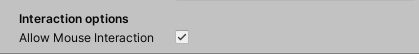

Unity Tool: Dialogue Editor
Links.
Video Tutorial.
Written Tutorial.
- What is Dialogue Editor?
- Editor Window
- Conversation Manager UI Prefab
- Triggering a conversation and Code info
- Custom Input
- Callbacks
- Conversation datastructure (for creating your own UI)
What is Dialogue Editor?
Dialogue Editor is a Unity tool that allows you to quickly and easily add conversations into your game.
The tool comes with an editor window that allows you to create and edit conversations.
This tool also comes with a pre-made, customisable UI prefab so that no coding or UI work is required. However, if you are comfortable with programming and wish to create your own UI implementation, each conversation can be accessed as a simple data structure.
Editor Window
Intro
Conversations are made up of Speech nodes and Option nodes. Speech nodes represent something a character will say, and Option nodes represent the options available to the player.
Creating a conversation object
In order to create a conversation, create a new GameObject and give it the script NPCConversation. In order to open the Editor Window, select Window -> DialogueEditor. Select a conversation in the hierarchy in order to edit the conversation in the editor window.

Speech nodes.
When you create a new conversation, it will contain a single speech node - this is the beginning of the conversation.
Select a speech node to edit it. A speech node has the following variables:
- Character Name: This is the name of the character who is speaking.
- Dialogue: This is the speech for the node.
- Automatically Advance: This option is available if a speech node leads onto another speech
node, or nothing.
When this option is selected, the dialogue will automatically continue without the user needing to
click anything.
- Display Continue Option: Should the "Continue" / "End" options still display?
- Dialogue Time: How long to wait before the dialogue automatically advances.
- Icon: This is the icon of the NPC that will appear next to the speech.
- Audio: This is an optional variable, you can play audio with this speech.
- TMP Font: This is the TextMeshPro font for this speech. You are able to set fonts on a node-by-node basis.
- Events: These are Unity Events that will run when this speech node in a conversation is played.
Speech nodes can either contain options for the user to select, lead onto other speech nodes, or have no connections.
- If a speech node connects to option nodes, these options will appear for the player.
- If a speech node connects to another speech node, the following speech node will occur afterwards.
- If a speech node is connected to nothing, it marks the end of the conversation.
Right-clicking on a Speech node allows you to either create a new option, connect to an existing option, create a new Speech node, or connect to an existing speech node.

Option nodes.
Option nodes will lead onto other speech nodes. When a user selects an option, the connected speech node will occur next.
Select an option node to edit it. An option node has the following variables:
- Option text: This is the text for the option.
- TMP Font: This is the TextMeshPro font for this option. You are able to set fonts on a node-by-node basis.
Right-clicking on an Option node provides options to creating a new speech node or connecting to an existing speech node.

Deleting nodes and connections
Unwanted connections between nodes can be deleted by right-clicking on the arrow and clicking "Delete this connection"
Likewise, unwanted nodes can also be deleted by right-clicking on the node and clicking "Delete this node". Deleting a node will also delete any connection to and from this node.

Conversation Manager + UI Prefab
A pre-made, customisable UI prefab is provided. The ConversationManager prefab can be dragged as a child of a Canvas.
Recommended settings:
- Canvas - RenderMode: "Screen Space - Overlay"
- Canvas Scaler - UI Scale Mode: "Scale with Screen size"
The ConversationManager provides options for the Background image of the Dialogue box and the Options box. These images can be optionally 9-sliced images. A preview render is displayed above the options. You can also select text-scrolling options.
Triggering a conversation + Code info
If you are using the ConversationManager UI Prefab, conversations can be triggered by calling a single function:
ConversationManager.Instance.StartConversation();
Note: You will need to add the "DialogueEditor" namespace to your script. This can be done by adding the following line at the top:
using DialogueEditor;
Here is some example code, which shows a very basic NPC class which begins a conversation when the NPC is clicked on:
using UnityEngine; using DialogueEditor; public class NPC : MonoBehaviour { public NPCConversation Conversation; private void OnMouseOver() { if (Input.GetMouseButtonDown(0)) { ConversationManager.Instance.StartConversation(Conversation); } } }
There are also a number of additional Properties and Functions available to you:
ConversationManager.Instance.IsConversationActive; // Is a conversation currently happening? ConversationManager.Instance.CurrentConversation; // The current conversation (null if no conversation active). ConversationManager.Instance.EndConversation(); // End a conversation early (e.g. player walks off).
Custom input
Dialogue Editor provides some basic functions which allows you to interact with the Conversation UI. This enables you to support any input method that your game supports, such as Keyboard + Mouse or a Controller
Three basic functions allow you to cycle to the next or previous option, and to press the currently selected option:
// Cycle to the previous option ConversationManager.Instance.SelectPreviousOption(); // Cycle to the next option ConversationManager.Instance.SelectNextOption(); // Press the currently selected option ConversationManager.Instance.PressSelectedOption();
Here is some example code which shows keyboard support for the Conversation UI:
Using UnityEngine; Using DialogueEditor; public class ExampleInputManager : MonoBehaviour { private void Update() { if (ConversationManager.Instance != null) { if (ConversationManager.Instance.IsConversationActive) { if (Input.GetKeyDown(KeyCode.UpArrow)) ConversationManager.Instance.SelectPreviousOption(); else if (Input.GetKeyDown(KeyCode.DownArrow)) ConversationManager.Instance.SelectNextOption(); else if (Input.GetKeyDown(KeyCode.F)) ConversationManager.Instance.PressSelectedOption(); } } } }
There is also an option on the Conversation Manager prefab which allows you to choose whether or not mouse interaction should be enabled.
Callbacks
If you are using the ConversationManager UI Prefab, there are two callbacks you can use which are invoked when a conversation starts and ends, respectively.
DialogueEditor.ConversationManager.OnConversationStarted DialogueEditor.ConversationManager.OnConversationEnded
Note: You will need to add the "DialogueEditor" namespace to your script. This can be done by adding the following line at the top:
using DialogueEditor;
Example use-case:
using UnityEngine; using DialogueEditor; public class ExampleClass : MonoBehaviour { private void OnEnable() { ConversationManager.OnConversationStarted += ConversationStart; ConversationManager.OnConversationEnded += ConversationEnd; } private void OnDisable() { ConversationManager.OnConversationStarted -= ConversationStart; ConversationManager.OnConversationEnded -= ConversationEnd; } private void ConversationStart() { Debug.Log("A conversation has began."); } private void ConversationEnd() { Debug.Log("A conversation has ended."); } }
Conversation datastructure
If you wish to write your own custom UI, and only use the editor-window for creating the conversation object, the conversation object can be deserialized into a simple and easy-to-use datastructure.
Note: You will need to add the "DialogueEditor" namespace to your script. This can be done by adding the following line at the top:
using DialogueEditor;
In order to deserialize the conversation, NPCConversation contains a function for doing so: this returns an object of type "Conversation":
NPCConversation NPCConv; Conversation conversation = NPCConv.Deserialize();
A NPCConversation deserializes into a tree-like data structure. A "Conversation" object contains a single member which is the root speech node of the conversation. From here, the nodes are connected in a tree-like pattern. The following classes make up the tree-like structure of a Conversation:
public class Conversation { public SpeechNode Root; } public abstract class ConversationNode { // The main body text public string Text; public TMPro.TMP_FontAsset TMPFont; } public class SpeechNode : ConversationNode { // The name of the speaker public string Name; // Should this dialogue node automatically advance? public bool AutomaticallyAdvance; // Should the "Continue" / "End" buttons still be visible? public bool AutoAdvanceShouldDisplayOption; // How long to wait before advancing public float TimeUntilAdvance; // The Icon of the spaker public Sprite Icon; // Audio to play public AudioClip Audio; // Normalised volume, 0-1, of the audio public float Volume; // The Options available on this Speech node, if any. public List<OptionNode> Options; // The Speech node following this, if any. public SpeechNode Dialogue; // The UnityEvent public UnityEngine.Events.UnityEvent Event; } public class OptionNode : ConversationNode { public SpeechNode Dialogue; // The dialogue following this option. }